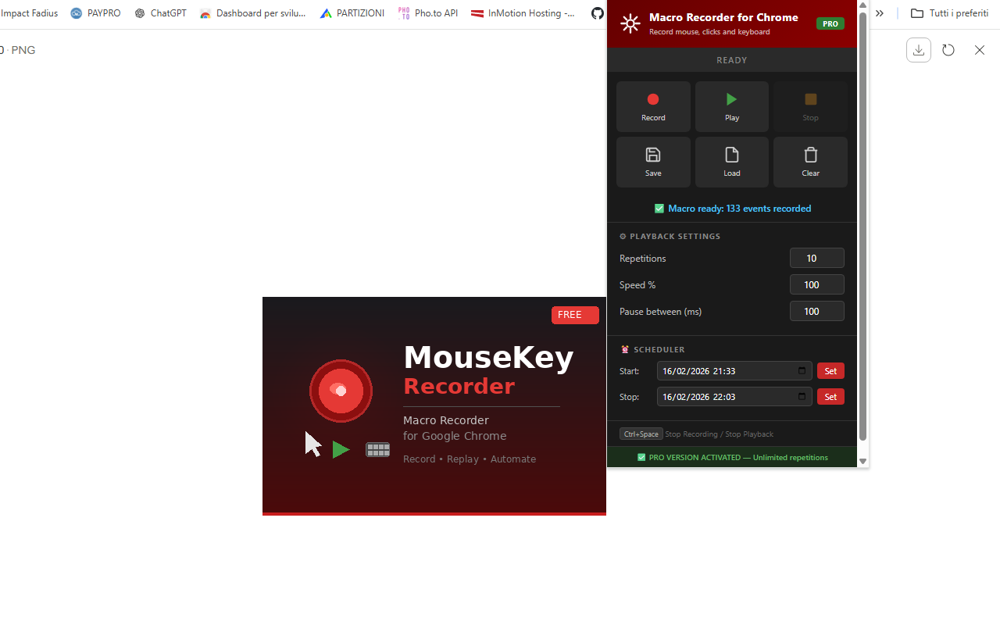
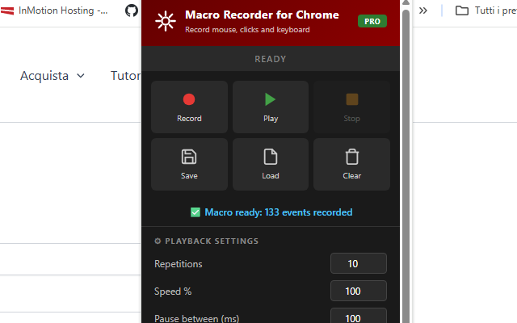

Macro Recorder for Chrome
Automate repetitive browser tasks in seconds 🖱️. With Macro Recorder for Chrome, you can record your mouse movements, clicks, keyboard inputs and page scrolling, then replay them automatically — as many times as you need. This powerful Chrome extension captures everything you do on a web page and replays it with precision, complete with a visual cursor that follows the exact path you recorded.
No more clicking through the same forms, workflows, or test sequences over and over again. The extension handles everything — capturing mouse movements, left and right clicks, double clicks, text inputs, keyboard shortcuts, and page scrolling. It even works across page navigations: if a click takes you to a new page, recording and playback continue seamlessly without missing a beat.
One of the standout features is the visual playback cursor 🎯 — a red arrow pointer that moves across the screen during replay, showing every action in real time. You always know exactly what the macro is doing. Combined with the red click flash effect, you get a clear visual feedback for every single interaction being replayed.
Playback is fully customizable. Speed up your macro to 1000% for rapid execution, or slow it down to 10% for careful step-by-step replay. Set the number of repetitions, add a pause between each run, or use the built-in scheduler ⏰ to start and stop playback at a specific date and time — perfect for hands-free automation.
Save your recorded macros as JSON files and load them anytime. Build a personal library of your most-used automations, share them with colleagues, or keep backups of your workflows. Everything runs entirely in your browser — no data is collected, transmitted, or stored on external servers.
📋 How to Use
- Install the extension from the Chrome Web Store.
- Navigate to any web page where you want to automate actions.
- Click the extension icon and press Record.
- Interact with the page: move the mouse, click, type, scroll, navigate to other pages.
- Press Ctrl+Space to stop recording.
- Open the extension panel and adjust settings: repetitions, speed, pause between runs.
- Press Play and watch the macro replay all your actions automatically.
- Press Ctrl+Space at any time to stop playback.
📷 Screenshots


✨ Key Features
- Record Everything — Mouse movements, clicks, double clicks, keyboard input, text entries and page scrolling
- Visual Playback Cursor — A red arrow pointer follows the recorded path in real time during replay
- Cross-Page Recording — Keep recording when you navigate to a new page, nothing is lost
- Cross-Page Playback — Playback resumes automatically after page transitions
- Adjustable Speed — From 10% (slow motion) to 1000% (turbo), find the perfect pace
- Custom Repetitions — Repeat the macro from 1 to unlimited times (PRO)
- Pause Between Runs — Add a custom delay in milliseconds between each repetition
- Built-in Scheduler — Start or stop playback at a specific date and time
- Save & Load Macros — Export as JSON files and import them anytime
- Smart Key Replay — Backspace, Delete, Home, End, arrows and text selection all replayed correctly
- Double-Click Selection — Word selection by double-click is fully reproduced during playback
- Click Flash Effect — Visual red flash on every click during replay for clear feedback
- Dark Theme Interface — Sleek, modern design that's easy on the eyes
- Lightweight — No background resource usage when idle
🎯 Perfect For
- Automating repetitive form filling
- Web application testing and QA
- Clicking through multi-step workflows
- Browser-based game automation
- Data entry tasks across multiple pages
- Scheduled automated actions
- Social media repetitive tasks
- E-commerce and inventory management
- Content moderation workflows
- Any repetitive task you do in Chrome
🆓 Free vs PRO
The free version includes all core features with a limit of 5 repetitions per playback. Upgrade to PRO for unlimited repetitions — enter your unlock code directly in the extension panel.
🔒 Privacy & Security
- Works entirely in your browser — no uploads to external servers
- Your macros and settings are stored only in your browser's local storage
- No account required
- No data collection or tracking
With Macro Recorder for Chrome, automating your browser has never been easier. Whether you're testing web apps, filling out forms, managing repetitive workflows, or just saving time on daily tasks, this extension gives you powerful automation with zero coding required. Just record, play, and let the macro do the work for you. 🚀
⬇️ Download from Chrome Web Store